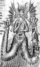

|
|
|
Isaiah 14
|
|
| 14:1
For the LORD will have mercy on Jacob, and will yet choose Israel, and set
them in their own land: and the strangers shall be joined with them, and
they shall cleave to the house of Jacob. |
|
| 14:2
And the people shall take them, and bring them to their place: and the
house of Israel shall possess them in the land of the LORD for servants and
handmaids: and they shall take them captives, whose captives they were; and
they shall rule over their oppressors. |
|
| 14:3
And it shall come to pass in the day that the LORD shall give thee rest
from thy sorrow, and from thy fear, and from the hard bondage wherein thou
wast made to serve, |
|
| 14:4
That thou shalt take up this proverb against the king of Babylon, and say,
How hath the oppressor ceased! the golden city ceased! |
|
| 14:5
The LORD hath broken the staff of the wicked, and the sceptre of the
rulers. |
|
| 14:6
He who smote the people in wrath with a continual stroke, he that ruled
the nations in anger, is persecuted, and none hindereth. |
|
| 14:7
The whole earth is at rest, and is quiet: they break forth into singing. |
|
| 14:8
Yea, the fir trees rejoice at thee, and the cedars of Lebanon, saying,
Since thou art laid down, no feller is come up against us. |
|
| 14:9
Hell from beneath is moved for thee to meet thee at thy coming: it
stirreth up the dead for thee, even all the chief ones of the earth; it hath
raised up from their thrones all the kings of the nations. |
|
| 14:10
All they shall speak and say unto thee, Art thou also become weak as we?
art thou become like unto us? |
|
| 14:11
Thy pomp is brought down to the grave, and the noise of thy viols: the
worm is spread under thee, and the worms cover thee. |
|
| 14:12
How art thou fallen from heaven, O Lucifer,
son of the morning! how art thou cut down to the ground, which didst weaken the nations!
|
 (14:12) Lucifer, son of the morning (14:12) Lucifer, son of the morning
This is the only verse in the bible that mentions Lucifer. Although
most Christians consider Lucifer to be Satan (the devil), there is little biblical justification for
doing so. In this verse "Lucifer" refers to the king of Babylon (Nebuchadrezzar?) and Lucifer
(the light bearer) is also called the "son of the morning" or morning star. The only other person that
is referred to in that way is Jesus (Rev.22:16). Does this mean that Lucifer
is Jesus?
Lucifer
14th Century copy of Dante's Divine Comedy)
|
| 14:13
For thou hast said in thine heart, I will ascend into heaven, I will exalt
my throne above the stars of God: I will sit also upon the mount of the
congregation, in the sides of the north:
|
| 14:14
I will ascend above the heights of the clouds; I will be like the most High.
|
| 14:15
Yet thou shalt be brought down to hell, to the sides of the pit.
|
| 14:16
They that see thee shall narrowly look upon thee, and consider thee,
saying, Is this the man that made the earth to tremble, that did shake kingdoms;
|
| 14:17
That made the world as a wilderness, and destroyed the cities thereof;
that opened not the house of his prisoners?
|
| 14:18
All the kings of the nations, even all of them, lie in glory, every one in
his own house. |
|
| 14:19
But thou art cast out of thy grave like an abominable branch, and as the
raiment of those that are slain, thrust through with a sword, that go down
to the stones of the pit; as a carcase trodden under feet. |
|
| 14:20
Thou shalt not be joined with them in burial, because thou hast destroyed
thy land, and slain thy people: the seed of evildoers shall never be
renowned. |
|
| 14:21
Prepare slaughter for
his children for the iniquity of their fathers; that they do not rise,
nor possess the land, nor fill the face of the world with cities. |


 (14:21)
"Prepare slaughter for his children for the iniquity of their fathers." (14:21)
"Prepare slaughter for his children for the iniquity of their fathers."
Does God punish children for the sins of their fathers?
|
| 14:22
For I will rise up against them, saith the LORD of hosts, and cut off from
Babylon the name, and remnant, and son, and nephew, saith the LORD.
|
| 14:23
I will also make it a possession for the bittern, and pools of water: and
I will sweep it with the besom of destruction, saith the LORD of hosts. |
|
| 14:24
The LORD of hosts hath sworn, saying, Surely as I have thought, so shall
it come to pass; and as I have purposed, so shall it stand: |
|
| 14:25
That I will break the Assyrian in my land, and upon my mountains tread him
under foot: then shall his yoke depart from off them, and his burden depart
from off their shoulders. |
|
| 14:26
This is the purpose that is purposed upon the whole earth: and this is the
hand that is stretched out upon all the nations. |
|
| 14:27
For the LORD of hosts hath purposed, and who shall disannul it? and his
hand is stretched out, and who shall turn it back? |
|
| 14:28
In the year that king Ahaz died was this burden. |
|
| 14:29
Rejoice not thou, whole Palestina, because the rod of him that smote thee
is broken: for out of
the serpent's root shall come forth a cockatrice, and his fruit shall be a
fiery flying serpent. |

 (14:29) "Out of the serpent's root shall come forth a
cockatrice, and his fruit shall be a fiery flying serpent." (14:29) "Out of the serpent's root shall come forth a
cockatrice, and his fruit shall be a fiery flying serpent."
What ever happened to these fascinating biblical creatures?
Cockatrice
|
| 14:30
And the firstborn of the poor shall feed, and the needy shall lie down in
safety: and I will kill thy root with famine, and he shall slay thy remnant.
|
| 14:31
Howl, O gate; cry, O city; thou, whole Palestina, art dissolved: for there
shall come from the north a smoke, and none shall be alone in his appointed
times.
|
| 14:32
What shall one then answer the messengers of the nation? That the LORD
hath founded Zion, and the poor of his people shall trust in it.
|
|